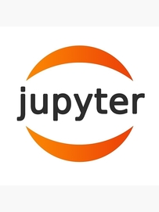
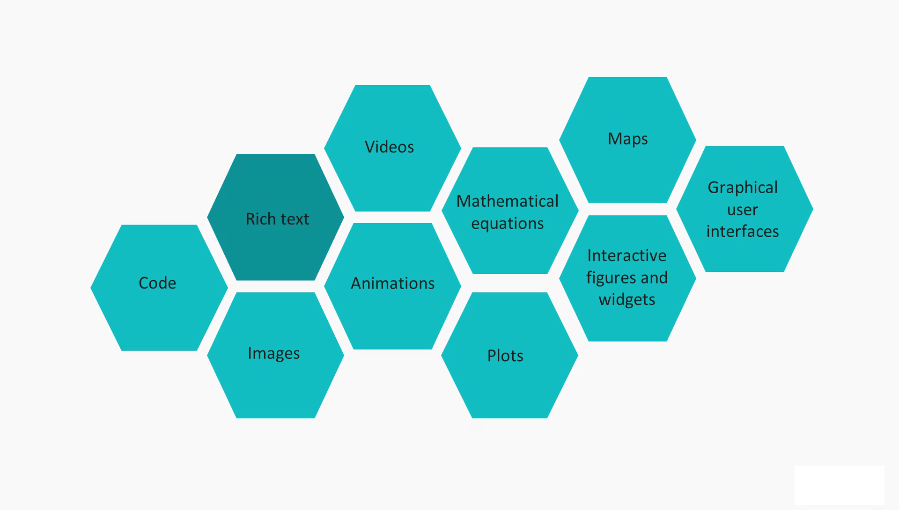
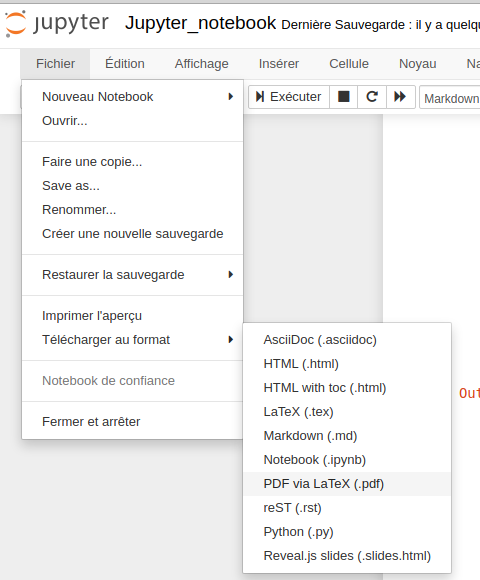

JUPYTER NOTEBOOK¶
B. DARID - 3 juillet 2020 
Qu’est-ce que Jupyter ?¶
Jupyter est un environnement développement interactif basé sur une page web en combinant code, texte, image, graphique etc.
Le projet est né en 2015 et permet à ce jour la programmation en plusieurs dizaines de langages. Il est très utilisé dans le monde de la recherche (data science notamment) et dans l’enseignement supérieur.

Comment l’utiliser: installer ou … pas?¶
Plusieurs possibilités:
on dispose de la distribution Anaconda, dans ce cas il n’y a rien à faire; Jupyter notebook est accessible via Anaconda Navigator.
on dispose d’un installation python fonctionnelle: il est préférable de passer par le gestionnaire de paquet de python
pipavec la commande ci-après (tapée dans un terminal ou une invite de commande, selon la plateforme)
pip install jupyter
Quelles sont ses principales fonctionalités ?¶
L’élément essentiel dans Jupyter notebook, au niveau de l’interface utilisateur est la cellule.
L’insertion d’une nouvelle cellule se fait avec le menu. Un clic dans celle-ci permet d’y apporter des modifications. Il faut, par ailleurs, choisir le type de contenu que la cellule va accueillir en sélectionnant dans la barre d’outils “code” ou “Markdown”.
Une cellule doit être exécutée avec la séquence “Shitf Entrée” ou “Ctrl Entrée” ou avec la barre d’outils.
Cellules de texte enrichi¶
Une cellule peut contenir du texte brut, sans aucun formatage particulier (par exemple cette ligne). On peut quand même l’enrichir de façon minimale en utilisant un langage de balisage léger: le markdown.
On peut mettre en gras, en italique, créer des listes:
Premier item
Deuxième item
On peut insérer des images avec la séquence , un hyperlien avec [texte_a_afficher](url), introduire du code \(\LaTeX\).
On peut aussi introduire des portions de code (python par exemple) sans perdre le formatage d’origine (indentation):
def fonction_inutile():
ne_fait_rien = True
return f"Mon nom est: {fonction_inutile.__name__}, mon adresse est {fonction_inutile}"
Pour voir le texte réellement saisi dans une cellule, double cliquer sur celle-ci.
Documentation Markdown
Cellules de code¶
def dropdup(t):
"""
Supprime les doublons d'un tableau et renvoie une nouveau tableau
t: tableau d'entiers ou flottants
"""
r = []#le tableau résultat
tmp = sorted(t)#Il est plus facile d'éliminer les doublons d'un tableau trié
i = 0
while i < len(t):
j = i + 1
while j < len(t) and tmp[j] == tmp[i]:
j = j + 1
r.append(tmp[j - 1])
i = j
return r
#Cellule de tests
t1 = [2, 2, 2, 8, 4, 5, 9, 3, 9, 6, 9]
dropdup(t1)
[2, 3, 4, 5, 6, 8, 9]
Cellule de code avec des “objets” externes embarqués¶
Page web embarquée¶
from IPython.display import IFrame
IFrame('https://jupyter-notebook.readthedocs.io/en/stable/', width=800, height=450)
Vidéo Youtube embarquée¶
from IPython.display import YouTubeVideo
YouTubeVideo('F6u5rhUQ6dU', width=800, height=450)
Pdf embarqué¶
from IPython.display import IFrame
IFrame('https://info-llg.fr/commun-mpsi/pdf/05.listes.pdf',\
width=800, height=450)
Animation pythontutor embarquée¶
from metakernel import register_ipython_magics
register_ipython_magics()
%%tutor
l1 = [[0] * 3] * 3
print(l1)
l2 = l1
l2[2][2] = -10
print(l1)
print(l2)
Carte embarquée¶
import folium
lat, lon = -21.29, 55.46
carte = folium.Map(location=[lat, lon], zoom_start=12)
carte
Code avec widgets¶
import numpy as np
import matplotlib.pyplot as plt
from ipywidgets import interact
%matplotlib notebook
def sinusoide(t, f=50, phi=np.pi/2):
"""
Trace deux sinusoides sin(2*pi*f*t) et sin(2*pi*f*t - phi)
t: tableau (numpy) de flottants,
f fréquence
"""
fig = plt.figure()
ax = fig.add_subplot(1, 1, 1)
ax.grid()
u1, = ax.plot(t, np.sin(2 * np.pi* f * t))
u2, = ax.plot(t, 0.7 * np.sin(2 * np.pi* f * t - phi))
def update(f):
"""
Raffraichi la figure quand l'utilisateur agit sur la fréquence
"""
u1.set_ydata(np.sin(2 * np.pi * f * t))
u2.set_ydata(0.7 * np.sin(2 * np.pi * f * t - phi))
fig.canvas.draw_idle()
interact(update, f=f)
t = np.linspace(0, 0.01, 500)
sinusoide(t, 300, np.pi/2)
Cellules “magic system”¶
Voir la section Liens, PyCon 2015
Exportation vers des formats différents¶
Un notebook jupyter peut être exporté en un nombre non négligeable de format.

Attention tout de même, certains formats nécessitent l’installation d’applications annexes (l’export en pdf via pdflatex est disponible avec l’installation d’une distribution LaTeX par exemple).
Utilisation de Jupyter à travers des exemples¶
Exemple 1: décharge d’un condensateur¶
On étudie la décharge d’un condensateur de capacité \(C\) à travers une résistance \(R\). La tension \(u(t)\) aux bornes du condensateur est régie par l’équation différentielle: \($ \frac{du(t)}{dt} = f(t, u(t))=-\frac{u(t)}{\tau} $\)
La méthode de résolution d’Euler revient à faire l’approximation:
Montrer que la relation de récurrence donnant la tension est: \($ u_{i+1} = u_{i}\times (1- \frac{h}{\tau}) $\)
Coder une fonction
eulerqui permet de calculer \(u(t_i)_{i \in [0\cdots n-1]}\) et qui a pour signature:
euler(u0, t0, h, n, tau)
Tracer les solutions calculées et théoriques
from math import exp
def euler(u0, t0, h, n, tau):
"""
methode d'euler, renvoie un tuple dont les composantes sont des tableaux
de solutions u(t), uthéorique(t) et t
u0, t0: conditions initiales, flottants
h: pas, flottant
n: nombre de points, entier naturel
tau: constante de temps, flottant
"""
u, t = [0] * n, [0] * n
u[0], t[0] = u0, t0
for i in range(n - 1):
t[i + 1] = t[i] + h
u[i + 1] = (1 - h / tau) * u[i]
utheor = list(map(lambda x: u0 * exp(-x / tau), t))
return (u, utheor, t)
import matplotlib.pyplot as plt
%matplotlib notebook
def trace(x, y1, y2):
"""
Réalise la tracé de y en fonction de y
"""
#figure, axes = plt.subplots(figsize=(8, 8))
figure, axes = plt.subplots()
axes.plot(x, y1, label='Valeurs calculées')
axes.plot(x, y2, label='Valeurs théoriques')
axes.set_xlabel('Temps $t(s)$')
axes.set_ylabel('Tension $u_c(V)$')
axes.set_title("Décharge d'un condensateur")
axes.legend(loc='upper center')
axes.grid()
plt.show()
#Cellule de tests
u, utheor, t = euler(5, 0.0, 2.5e-4, 20, 1.0e-3)
trace(t, u, utheor)
Exemple 2: valeur de \(\pi\) avec une série (Leibniz)¶
On rappelle la formule de Leibniz:
Coder une fonction
serie_arctan(n)avecnentier naturel, qui retourne \(\arctan{1}\);Evaluer l’erreur commise sur la valeur de \(\pi\) lorsque \(n=500\). On pourra tracer par exemple \(\log |\pi -4\times\mathrm{serie\_arctan(n)}|\) en fonction de \(n\).
Conclusion.
"""
Le calcul de la série se fera en utilisant le module decimal, qui a l'avantage
de produire des "arrondis mathématiquement corrects".
Documentation: https://docs.python.org/fr/3.8/library/decimal.html
"""
import sympy
import decimal
decimal.getcontext().prec = 500#précision à 500 décimales
PI = sympy.pi.evalf(500)#pi avec 500 décimales
def serie_arctan(n):
"""
Retourne arctan(n) calculé avec la série de leibniz.
n: entier naturel
"""
somme = decimal.Decimal(0)
for k in range(n):
somme += (decimal.Decimal('-1') ** k) / (2 * k + 1)
return somme
1.2 * 3 -3
0.5999999999999996
import math
import matplotlib.pyplot as plt
%matplotlib notebook
def erreur(n):
return abs(PI - 4 * serie_arctan(n))
def trace(n):
"""
Trace erreur = f(n)
"""
approx = [math.log10(erreur(i)) for i in range(1, n + 1)]
figure, axes = plt.subplots()
axes.plot(list(range(1, n + 1)), approx, label='$\log |\pi -4\cdot{serie\_arctan(n)}|$')
axes.set_xlabel('$n$')
axes.set_title("Evolution de l'erreur")
axes.legend(loc='upper center')
axes.grid()
plt.show()
trace(500)
Analyse spectrale¶
(A retravailler, valeurs des harmoniques douteuses)
import wave
import numpy as np
wr = wave.open('piano_8kHz_16bits.wav', 'r')
sz = 8000
da = np.frombuffer(wr.readframes(sz), dtype=np.int16)
left, right = da[0::2], da[1::2]
lf, rf = abs(np.fft.rfft(left)), abs(np.fft.rfft(right))
fig, (ax1, ax2) = plt.subplots(2, 1)
fig.subplots_adjust(hspace=0.6)
ax1.set_xlabel('temps $(s)$')
ax1.set_ylabel('amplitude')
ax1.ticklabel_format(axis='y', style='sci', scilimits=(4,4), useMathText=True)
ax1.grid(True)
ax1.plot(left)
ax2.set_xscale('log')
ax2.set_xlabel('frequence $(Hz)$')
ax2.set_ylabel('amplitude')
ax2.ticklabel_format(axis='y', style='sci', useMathText=True)
ax2.grid(True)
ax2.plot(lf)
fig.savefig('spectre.png')
Avantages / inconvénients¶
Avantages¶
Parmi les avantages on peut citer:
simplicité de l’interface (navigateur web, outil d’utilisation courante);
Présentation claire et agréable;
La séparation de la feuille de travail en “cellules” est en parfait accord avec le style de programmation modulaire que l’on doit privilégier;
Un très large choix de type de conversion de son document (html, pdf, tex, py etc ..).
Inconvénient¶
Installation délicate dans l’environnement de travail du lycée. L’installation de paquets nécessite de passer les paramètres du proxy en option du gestionnaire pip.
Bonus: le Jupyter book ou comment publier son travail (via github.io)¶
Le support de diffusion (github.io) nécessite un compte github.
On crée le dossier de travail avec jupyter-book :
jupyter-book create presentation
On obtient un dossier presentation avec plusieurs fichiers dont _toc.yml qui définit la structure du document. On y ajoute les fichiers relatifs à notre notebook puis on lance Sphinx avec la commande:
jupyter-book build presentation/
On crée un dépot sur Github via l’interface graphique en ligne, puis cloner ce dépot sur le disque local:
git clone https://github.com/brunodrd/jupyter.git
Un dossier jupyter est créé et on y copie tous les fichiers présents dans presentation/_build/html/ :
cp -r presentation/_build/html/* jupyter/
La dernière étape consiste à envoyer l’ensemble des fichiers présents dans jupyter/ sur github:
cd jupyter
git add ./*
git commit -m "Ma présentation!"
git push
puis:
ghp-import -n -p -f ../presentation/_build/html